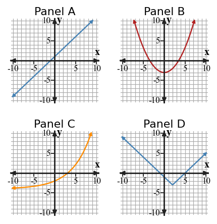
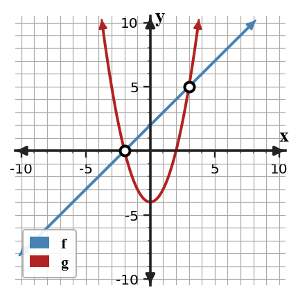

Mathematical idea: A strong solution pathway chooses the representation that shows the needed feature most clearly.
Today you will connect tables, equations, graphs, and contexts across function families. You will solve intersection problems, compare strategies, and justify which representation best supports a conclusion.
Learning Target: Students will synthesize understanding of function families and representations to solve complex problems.
I can statements
This is a long-range preview for future lessons. Do not solve it today. Instead, annotate it individually. Circle anything familiar, underline symbols or directions that seem important, and write notes about what information you think will be needed later.
As you annotate, ask yourself: What parts (words, symbols, graphs) do you KNOW? What parts look FAMILIAR? What parts look like jibberish?
Create a capstone task with a context, table, and equation that require a student to choose between linear and exponential models. Include the correct model choice and the evidence you expect.
Teacher note: students should annotate familiar representations only; do not solve the future task yet. Listen for evidence words such as table, graph, model, vertex, rate, ratio, or context.
Directions
Read the introduction aloud with a partner or in a small group. As you read, annotate the text by highlighting important ideas, circling key vocabulary, and writing short notes about connections, questions, or predictions in the margins.
A synthesis problem asks you to use more than one idea at the same time. To synthesize representations, you connect information from equations, graphs, tables, and contexts to make one solution pathway. The goal is not to use every representation, but to use the ones that help.
Two functions have the same output at an input where their graphs intersect. In an equation, this means the two rules can be set equal to each other. In a context, it means two quantities are equal at the same input value.
Different representations reveal different features. A graph can make intersections visible, a table can show exact input-output pairs, and an equation can support exact solving. The best representation depends on what the question asks you to find or justify.
Function-family features still matter in capstone problems. Constant rate, constant second difference, constant ratio, vertex, and intervals can all help identify a useful model.
A complete response includes both a result and a reason. Strong reasoning explains why the chosen method fits the information and how the answer makes sense in the original situation.
Teacher note: use this space for student annotations from the reading. Ask students to underline the sentence that answers each first two Stop and Discuss questions.
Stop and Discuss
Intro S&D answers: Q1: The answer is stated in paragraph A. Q2: The answer is stated in paragraph B. Q3: Students infer from paragraph C; accept answers that connect the concept to evidence rather than keywords.
When several families appear together, identify the feature each representation reveals best.
Constant rate of change.
Constant second differences or a vertex.
Constant ratio or repeated percent change.
Distance from a target or a V-shaped graph.

Context: The family feature tells you which model is reasonable before you solve.
Match each feature to the function family it most strongly supports. The family list is intentionally scrambled.
| Feature | A | B | C | D |
|---|---|---|---|---|
| Description | constant ratio | vertex minimum | constant rate of change | constant second difference |
| Family option | 1 | 2 | 3 | 4 |
|---|---|---|---|---|
| Name | quadratic | linear | exponential | absolute value |
Example 1 answer: A→3, B→1 or 4 depending on context; vertex minimum is strongest for quadratic or absolute value, C→2, D→1. A vertex can appear in both quadratic and absolute value graphs. Teaching reminder: require the evidence sentence, not just the final answer.
Match each feature to the function family it most strongly supports. The family list is scrambled.
| Feature | A | B | C | D |
|---|---|---|---|---|
| Description | V-shaped distance graph | repeated multiplication | same add-on each step | U-shaped graph with second differences |
| Family option | 1 | 2 | 3 | 4 |
|---|---|---|---|---|
| Name | linear | absolute value | quadratic | exponential |
You Try It 1 answer: A→2, B→4, C→1, D→3. Repeated multiplication supports exponential; same add-on supports linear. Follow-up: ask which representation made the answer easiest to see.
Stop and Discuss
Stop and Discuss A answer: So the match must be based on features instead of position order.
To find where two functions have the same output, set the rules equal or look for graph intersections.
$$f(x)=x+2$$ $$g(x)=x^2-4$$ $$x+2=x^2-4$$ $$x^2-x-6=0$$Solutions: $x=-2$ or $x=3$.
| $x$ | $-2$ | $3$ |
|---|---|---|
| $f(x)$ | $0$ | $5$ |
| $g(x)$ | $0$ | $5$ |

Context: Each intersection means both models predict the same output at that input.
Two functions are defined by $f(x)=x+2$ and $g(x)=x^2-4$.
Example 2 answer: Set $x+2=x^2-4$. Then $x^2-x-6=0$, so $x=-2$ or $x=3$. Outputs are 0 and 5. Teaching reminder: require the evidence sentence, not just the final answer.
Two functions are defined by $f(x)=x+1$ and $g(x)=x^2-5$.
You Try It 2 answer: Set $x+1=x^2-5$. Then $x^2-x-6=0$, so $x=-2$ or $x=3$. Outputs are -1 and 4. Follow-up: ask which representation made the answer easiest to see.
Stop and Discuss
Stop and Discuss B answer: The equation found inputs; the table confirmed both functions had the same outputs at those inputs.
The graph shows two functions on the same coordinate plane.
Example 3 answer: The intersections are about $x=-2$ and $x=3$. Equal output means both functions predict the same value. A graph estimate may not be exact, so check with algebra or a table. Teaching reminder: require the evidence sentence, not just the final answer.
The table compares two functions.
| $x$ | $-1$ | $0$ | $1$ | $2$ | $3$ |
|---|---|---|---|---|---|
| $f(x)$ | $5$ | $4$ | $3$ | $2$ | $1$ |
| $g(x)$ | $9$ | $4$ | $1$ | $0$ | $1$ |
You Try It 3 answer: The same outputs occur at $x=0$ with output 4 and $x=3$ with output 1. The table only checks listed inputs, so other intersections could be missed. Follow-up: ask which representation made the answer easiest to see.
Stop and Discuss
Stop and Discuss C answer: The graph may be approximate; algebra or tables can verify exact values.
Strategy choice depends on what each representation makes easy to see.
Context: In a capstone task, you may use one representation to solve and another to check.
Two students solve $|x+1|=2x-5$. One graphs both sides, and the other splits the absolute value into cases.
Example 4 answer: Graphing can show the number and approximate location of solutions. Algebra gives exact candidates and helps reject invalid cases. Algebra first is efficient here, but graphing is useful to check. Teaching reminder: require the evidence sentence, not just the final answer.
Two students solve $|x-3|=x+1$. One uses a graph, and one splits into cases.
You Try It 4 answer: Graphing shows approximate intersections and possible number of solutions. Algebra gives exact candidates. Case solving first is useful, with graphing as a check. Follow-up: ask which representation made the answer easiest to see.
Stop and Discuss
Stop and Discuss D answer: The better method reveals the needed feature or exact answer more efficiently and accurately.
In this section, you practiced function synthesis by using evidence instead of guessing.
Strong work connects at least two representations, such as a table and equation, a graph and context, or a feature and a model family.
The most common error is trusting a surface clue without checking the mathematical pattern or feature.
Strong understanding means you can explain why a model, transformation, solution, or strategy fits the situation.
Look back at the future task. Do not solve it yet. Highlight one part that makes more sense now than it did at the beginning. Circle one part that still feels unfamiliar. Write one sentence about what representation you would look at first.
Match each feature to a family: constant rate of change, constant second difference, constant ratio, vertex minimum.
Given $f(x)=2x+1$ and $g(x)=x^2-4$, find the input values where the two functions have the same output.
What is one idea about function synthesis you understand better now than at the start of class? Write at least one complete sentence.
What is one thing about function synthesis you still want to understand or practice? Be specific — name the idea, not just "everything."